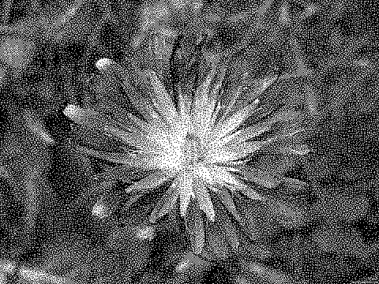
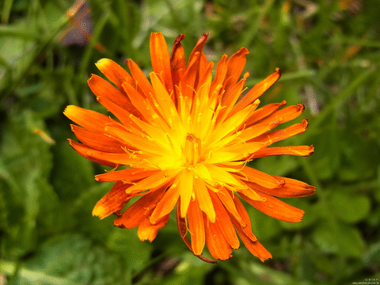
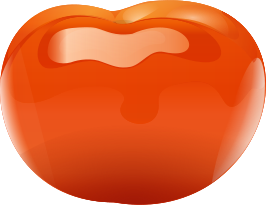

Image formats¶
There are two main types of image formats, bitmap formats and vector formats.
- Format of bitmap image
Bitmap images, also called Raster, are made up of many color points called pixels, which make up a photography or drawing. When this type of image is enlarged, you can see the different pixels of the image as different elements. This makes the image quality worse in these cases.
An example of a bitmap image is the images taken by a digital camera or scanner.
- Vector image format
Vector images are formed by instructions that determine the appearance of objects such as lines, circles, squares or Bézier curves. When this type of image is enlarged, the lines and curves remain with the same quality, without being able to see points that form the image.
An example of a vector image can be found in TrueType letters in a text editor or a PDF document. These letters can be expanded as much as you want without ever losing their quality.

Difference between a bitmap image (Raster) and a vector image (SVG).¶
Index of contents:
Color schemes¶
There are two major color schemes, additive and subtractive. Each of them has a different field of application and it is convenient to use each one in its area, to obtain the best results.
{kind=link}
- RGB additive color scheme
This scheme is called additive because it generates the different colors by adding light sources. It is the scheme used in monitors, projector televisions or telephone screens.
The primary colors from which all the others are formed are red (Red), green (Green) and blue (Blue). The name RGB comes from these three colors.
This scheme works based on the fact that the human eye has three color receptors (red, green and blue) that it uses to detect all the colors of the rainbow from a combination of all of them. Thus our eye perceives the color yellow as a combination of red light plus green light.
Secondary colors are formed by adding two primary colors:
Red + Green = Yellow
Red + Blue = Magenta
Green + Blue = Cyan
Red + Green + Blue = White
Absence of color = Black
- CMYK Subtractive Color Scheme
This scheme is called subtractive because it generates the different colors by reflecting white light, which contains all the colors, except some colors that are subtracted with an ink. For example, yellow ink will reflect all the white light that reaches it, except for the blue color, which is subtracted or absorbed inside the ink. This is the color scheme used in printing presses.
The primary colors from which all the others are formed are cyan (Cyan), magenta (Magent), yellow (Yellow) and black (Key). . If the inks were perfect, they could achieve the black color by adding all of them (CMY) but in practice it is easier and looks darker when using a specific ink to achieve the black color.
Secondary colors are obtained by mixing inks and therefore absorbing more than one color. Of the three colors of white light (red, green, and blue), yellow ink absorbs blue, cyan ink absorbs red, and magenta ink absorbs green. When mixing yellow and cyan inks, blue and red are absorbed, leaving only the color green as the final result.
This scheme is used for printing magazines, books, brochures, posters and all types of printing works. It is also the basis of color printers and oil paints, watercolors, crayons, etc.
Secondary colors are formed by adding two primary colors:
Cyan + Magenta = Blue
Cyan + Yellow = Green
Magenta + Yellow = Red
Cyan + Magenta + Yellow = Black
Absence of color = White
Color depth¶
Color depth refers to the number of different colors that an image can display. The lowest color depth is that of an image that only works with 2 colors (black and white).
The color depth in standard camera JPEG images is 8 bits (256 levels) for each of the three RGB tones, with a total result of 24 bits or 16 million different colors.
Finally, professional cameras can take RAW images with up to 14 bits (16384 levels) for each of the three RGB tones, with a total result of 42 bits or 4 billion different colors. In practice, this depth of color cannot be represented on paper nor are we able to appreciate it, but it allows us to work with the image to edit it or 'reveal' it as we see fit without loss of quality.
- 1 bit color depth
2 colors.
This color depth is used for faxing, storing text, or simple drawings. The advantage it has is that it takes up very little space.
- 4-bit color depth
16 colors.
It is too low a color depth and presents obvious errors in the image, but it can be used in document scanning to represent color with a smaller overall size.
- 8-bit gray color depth
256 shades of gray.
It has hardly any loss of quality in the tones, but it does not allow color to be represented.

- 8-bit color depth
256 colors.
This is the standard for GIF format images. It allows enough colors to be represented so that too much quality loss is not noticeable, with the advantage of allowing the image size to be reduced with respect to the true color.
- 24-bit color depth
16 million colors (256 shades of red, 256 green and 256 blue).
Also called true color or True Color. This is the standard for JPEG format images. It has sufficient quality to store photographs, but it is not of sufficient quality to perform image editing operations without risk of losing precision.
- Color depth from 36 to 48 bits
14 bits for each RGB tone = 42 bits or 4 billion colors.
Schemes with a greater number of colors than 8 bits per RGB tone do not present noticeable differences to the human eye.
When an image has more than 8 bits per RGB tone, image editing operations can be performed with less quality loss than images with fewer colors, which are not appropriate for editing operations.
Bitmap formats¶
The following formats of bitmap images are composed of pixels or points of the image that are stored one by one in the file until the image is complete.
- JPEG (JPG)
The JPEG (Joint Photographic Experts Group) format, created in 1992, is an image file format used to store photographs in a compressed format. This file format is lossy, which means that a certain amount of image information is lost when compressing it so that it takes up less space, especially in small details, generating noise called artifacts. For that reason, this format is not a good option for saving images of drawings, text, graphics, etc.
Photography stored in JPEG format.¶
The JPEG file format can be used to store images in various color formats, including 8-bit RGB per color, CMYK, and YCbCr. The color depth of this format (8 bits for each RGB tone) is reduced and therefore it is not a good option for editing photographs. For this task it is much better to use the RAW formats of each camera, which have 36 or 42 bits per pixel.
The JPEG format does not allow defining transparency in the image, so it is not a good option for inserting cropped images. For this task it is better to use a format that allows transparency, such as PNG.
- PNG
The PNG (Portable Network Graphics) format was created in 1995 as an image format with lossless compression, that is, it does not lose any detail during image compression.
The PNG format is ideal for storing images of drawings or text since, being lossless, they will be stored without noise or "artifacts".

PNG image of a colored grid.¶
This format is also ideal for images that use transparencies, since each pixel can be stored along with a transparent color code that prevents the edges from being noticeable.
Although it can be used to save photographs, it is not advisable because, since it is lossless, its size is much larger than that of JPEG images. If you want to save a lossless photo so you can edit it, it is preferable to use the TIFF format.
The PNG format can save images with various color depths tailored to each application. With black and white colors (1 bit per pixel) you can store text images or similar with a very high level of compression. Grayscale images or true color images (8-bit RGB per color) can also be stored.
The PNG format does not allow storing CMYK colors adapted to printing on paper.
- GIF
The GIF (Graphics Format Interchange) format was launched in 1987 by CompuServe and is widely used on the Internet in both images and animations due to its wide support and compatibility.
As a special feature, this is the only popular format that can save moving images or animations. Videos with photographic images appear with a great loss of color because this format can only handle a palette of 256 colors, however this has not prevented it from being widely used.
The GIF format allows you to save drawings with transparencies, but with worse quality than with the 24-bit PNG format.
The main application of the GIF format is to store small drawings and animations with or without transparency.

Zaqwerdx, CC BY-SA 3.0, via Wikimedia Commons.¶
- TIFF
The TIFF (Tagged Image File Format) format was published in its version 6 in 1992 and is widely used in the graphics industry and in professional photography by its versatility and lossless compression.
It is a format that takes up a lot of memory when storing lossless photos, especially if you use a high color depth, with 16 bits for each RGB color tone. However, these features make the TIFF format highly appreciated in professional photo editing and scientific photography.
- RAW
The RAW format is a set of formats used by professional and high-end cameras to save images as they have been captured by the camera sensor. They have a great color depth (36 to 48 bits per pixel) and are stored without loss, so each file occupies a large size compared to the equivalent image in JPEG format.
This format allows you to process or 'reveal' an image so that it has more or less luminosity or more or less dynamic range, without losing quality in the final result.
The drawback of this format is the lack of standardization, so each manufacturer uses its own version of the format, which can cause incompatibilities or some version of the RAW format cannot be used in the future.
- Overview of bitmap image formats.
Format Compression Losses Color Transparencies Motion JPG Yeah Yeah RGB 8 bits per tone
CMYK
No No PNG Yeah No 256 colors
RGB 8 bits per tone
RGB + Transparency
Yeah No GIF Yeah No Only 256 Colors Yeah Yeah TIFF Yeah No 8-bit RGB per tone
CMYK
No No RAW No No RGB 12 to 16 bits per tone No No Format Image type JPG Photographs. PNG Drawings. GIF Drawings.
Images with movement.
TIFF Professional photography.
Scientific photography.
Printing on paper.
RAW Professional photography.
Comparison between JPEG and PNG formats¶
In the following images we can check the differences and the usefulness of each of the image formats.
When saving text or drawing images, it will always be better to use the PNG format, which will take up less size and provide better quality.

PNG image file of 6kb size, no errors.¶

JPEG image file 7kb in size, with "artifacts".¶
PNG image file 210 bytes in size, no errors.¶
JPEG image file 11284 bytes in size, with "artifacts".¶
When saving photographs, it will always be better to use the JPEG format, which will take up less size and provide similar quality. In reality, the quality of the JPEG format will be lower, but it will not be noticeable to the naked eye.
PNG image file of 262kb size.¶
JPEG image file 52kb in size.¶
Vector formats¶
Vector image formats are composed of vectors, which are mathematical instructions that are given to the browser or editing programs for these graphics so that they can be displayed. These images can be scaled infinitely without losing resolution or quality.
- SVG
The SVG (Scalable Vector Graphics) format is an open standard published by the W3C consortium in 1999 to distribute images on the web. This format allows defining vector images in two dimensions.
SVG images can be manipulated with JavaScript, which is a programming language, to create interactive animations in web browsers.
Stephen Winsor, GNU General Public License v3, via Wikimedia Commons.¶
The PDF (Portable Document Format) standard is a digital document storage format designed by Adobe so that it can be easily viewed and printed on any device.
PDF is a standardized format and open for anyone to use freely.
Documents saved in PDF format can contain text, hyperlinks, graphics, drawings, photographs and even video.
This format has the great advantage of keeping the page layout unchanged (margins, font sizes, position of images, etc.) and of being a widely compatible and standard format for long-term document storage.
As a disadvantage, the PDF format can be edited with difficulty, so it is better to also store the original source file (.docx).
- Typographic fonts
Vector fonts are sets of symbols and letters designed for use on computers, both for displaying text on a screen and for printing on paper.
Since they are vector formats, they are easily scalable, meaning that letters and symbols can be represented in any size without losing quality.
The most used formats to define sources are the following.
TrueType (TTF): Format developed by Apple and Microsoft in the late 1980s. It is widely supported and widely used in Windows and macOS.
PostScript (PS): Language developed by Adobe for printing with high-quality printers. It allows you to define fonts, although it has many more applications.
OpenType (OTF): Format developed by Microsoft and Adobe in 1996 to improve and succeed the two previous formats.
It is currently an open standard (Open Font Format), available publicly and free of charge.
TeX: It is a typography system written by Donald E. Knuth, very popular in the university academic environment. The associated LaTeX system expands the capabilities of TeX for professional text composition.
This system is free software, so anyone can use it without paying a license.
{kind=link}
{kind=link}